MÓDULO 5 : Tratamiento de la enfermedad avanzada en segunda línea

5.4 Inmunoterapia
La inmunoterapia con agentes inhibidores de PD-1/PD-L1 ha supuesto un gran avance en el manejo del CNMP localmente avanzado o metastásico en segunda línea y actualmente constituye el tratamiento de elección de segunda línea para una gran proporción de los pacientes con CNMP avanzado que han progresado a una primera línea de QT.
Hasta la fecha los tres fármacos aprobados en el tratamiento de segunda línea son nivolumab, pembrolizumab y atezolizumab. Todos ellos han sido aprobados en base a los resultados de estudios fase III que han demostrado una mejoría en SG en comparación con docetaxel.
En líneas generales las poblaciones incluidas en los ensayos presentaban características similares. Todos los pacientes tenían un estado funcional ECOG ≤ 1 y la mayoría presentaba un estadio IV de la enfermedad. La mediana de edad estaba comprendida entre 62 y 64 años y la mayoría eran o habían sido fumadores. La mayoría de los pacientes había recibido una única línea de tratamiento previa. Sin embargo, en los ensayos de atezolizumab (25%) y pembrolizumab (27%) el porcentaje de pacientes que habían recibido 2 ó más líneas de tratamiento previo fue mayor que en los ensayos con nivolumab (12% en el ensayo CheckMate 057).
En los ensayos con inmunoterapia en pacientes con CNMP (a excepción del ensayo pivotal de nivolumab en histología escamosa) se observa una cierta asociación entre el grado de expresión de PD-L1 basal y la eficacia del tratamiento. En el ensayo de pembrolizumab toda la población expresaba PD-L1 (≥ 1%), y un 43% de los pacientes tenían una expresión mayor al 50%.
No se han realizado estudios comparativos entre ellos. El perfil de expresión de PDL1 y la posología de administración pueden condicionar la indicación de uno u otro.
Expresión de PDL1: Nivolumab y atezolizumab han sido aprobados en pacientes con CNMP avanzado previamente tratado independientemente de la expresión de PDL1, mientras que pembrolizumab solamente está aprobado en pacientes con expresión de PDL1 ≥ 1%.
Esquema de administración: atezolizumab y pembrolizumab se administran una vez cada 3 semanas y nivolumab se administra 1 vez cada 2 semanas.
Nivolumab fue el primer agente autorizado en este contexto, en pacientes que ya habían recibido una primera línea de tratamiento. Dos ensayos pivotales uno en pacientes con tumor de histología no escamosa (CheckMate 057) y otro en tumores de histología escamosa (CheckMate 017), en ambos casos comparado con docetaxel demostraron una mayor TR y SG con nivolumab.
Pembrolizumab ha sido autorizado en CNMP en pacientes previamente tratados en base a los resultados del estudio KEYNOTE-010 (n=1.033). A diferencia de los ensayos de nivolumab y atezolizumab, en este ensayo únicamente se incluyeron pacientes con expresión de PD-L1 ≥ 1%.
Atezolizumab ha sido autorizado en CNMP en pacientes previamente tratados en base a los resultados del estudio OAK.
A continuación se resumen los datos principales de los distintos estudios realizados con inmunoterapia en segunda línea de tratamiento.
Nivolumab
Nivolumab es un anticuerpo monoclonal inhibidor de PD-1.
Dos ensayos pivotales fase III, uno en pacientes con tumor de histología no escamosa (CheckMate 057) y otro en tumores de histología escamosa (CheckMate 017), han establecido la eficacia de nivolumab en segunda línea.
En ambos ensayos los pacientes se incluyeron independientemente de la expresión de PD-L1.
El ensayo CheckMate 017, comparó nivolumab (3 mg/Kg IV cada 2 semanas) versus docetaxel en 272 pacientes con CNMP con histología escamosa, ECOG 0-1, que habían progresado a una primera línea de quimioterapia basada en platino.
La mediana de SG en el brazo de nivolumab fue de 9,23 meses, superior a la alcanzada en el brazo control (6,01 meses), con una HR de 0,59 (IC 95% 0,44-0,79, p < 0.001]). La TRO fue del 20% frente al 8.8% alcanzada con docetaxel. En cuanto a la SLP, las medianas de SLP en los brazos experimental y control fueron 3,48 meses y 2,83 meses respectivamente (HR 0,62 [IC 95% 0,47-0,81]).
Recientemente se han presentado los datos de SG a 2 años, confirmando dichos resultados (SG a 2 años: 29% vs 16%).
No hubo diferencias de eficacia en base al nivel de expresión de PD-L1.
El perfil de tolerabilidad también fue mejor para nivolumab.
En el ensayo CheckMate 057, 582 pacientes con CNMP avanzado de histología no escamosa y previamente tratados, fueron randomizados a recibir nivolumab o docetaxel. Nivolumab demostró superioridad frente a docetaxel en términos de SG, con una HR de 0,73 (IC 95% 0,59-0,89, P= 0.002) y una mediana de SG de 12,19 meses vs. 9,36 meses con quimioterapia. Recientemente se han presentado los datos de SG a 2 años, confirmando dichos resultados (SG a 2 años: 23% vs 8%).
El perfil de tolerabilidad también fue mejor para nivolumab con una toxicidad G3/4 de 10% con nivolumab frente a 55% con docetaxel.
En este ensayo se observó un mayor número de muertes entre los tratados con nivolumab durante los 6 primeros meses de tratamiento y especialmente en los tres primeros meses. La existencia de ciertos factores de mal pronóstico o enfermedad agresiva junto con una baja expresión de PD-L1 podrían explicar en parte estos resultados. La TRO fue también superior en los pacientes tratados con nivolumab (19,2% vs. 12,4%) y las respuestas fueron más duraderas (17,15 meses vs. 5,55 meses). No se observaron diferencias estadísticamente significativas en SLP (HR 0,92 [IC 95% 0,77-1,11]).
Los pacientes con mayor nivel de expresión PD-L1 (≥10%), experimentaron tanto una TRO (37,2%) como una SG (19,4 meses [IC95% 15,2, NA]) mayores con nivolumab, en comparación con docetaxel (12,7%, 7,95 meses [IC95% 6,3-10], respectivamente). Por otro lado, en aquellos pacientes con bajo o nulo nivel de expresión PD-L1 ( < 1%), no se observaron diferencias en SG con nivolumab respecto a docetaxel. (10,4 meses [IC95% 7,2-14,1] y 10,9 meses [IC95% 7,4-11,9], respectivamente).
Nivolumab: carcinoma escamoso
Nivolumab demostró en el estudio CheckMate 017 un aumento significativo de la SG (9.2 vs 6.0 meses), SLP, así como la tasa de respuestas (20% vs 9%). Además, este beneficio fue independiente de la expresión de PD-L1. La toxicidad fue mucho menor con nivolumab que con docetaxel.
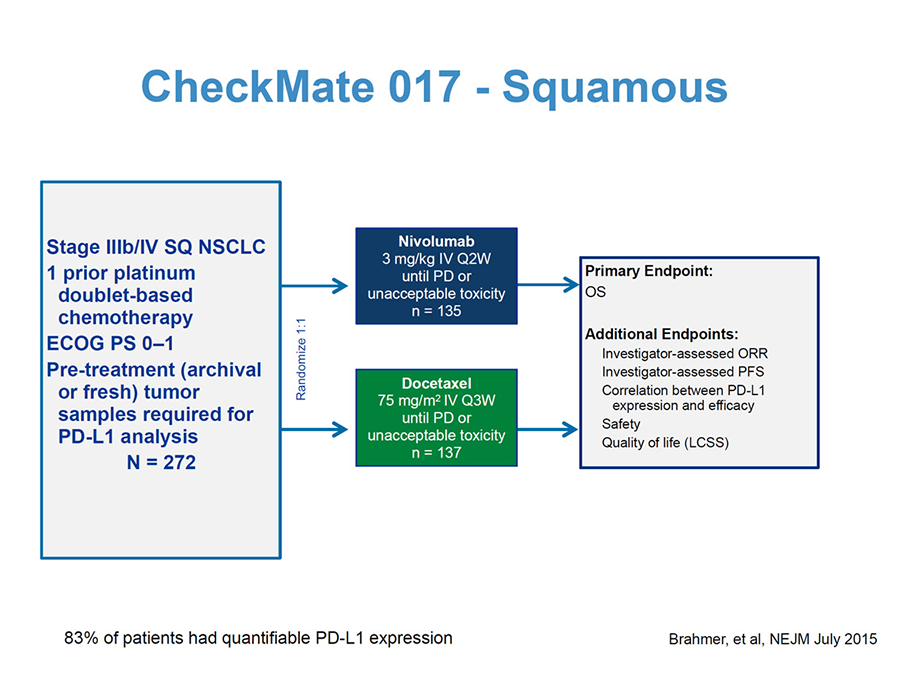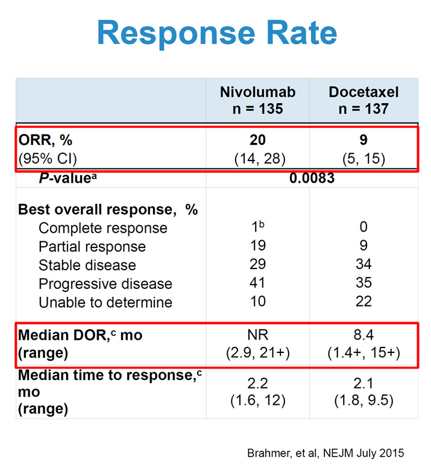
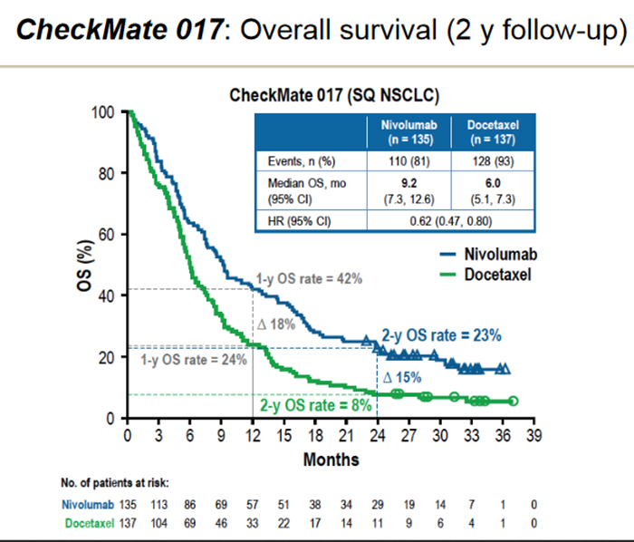
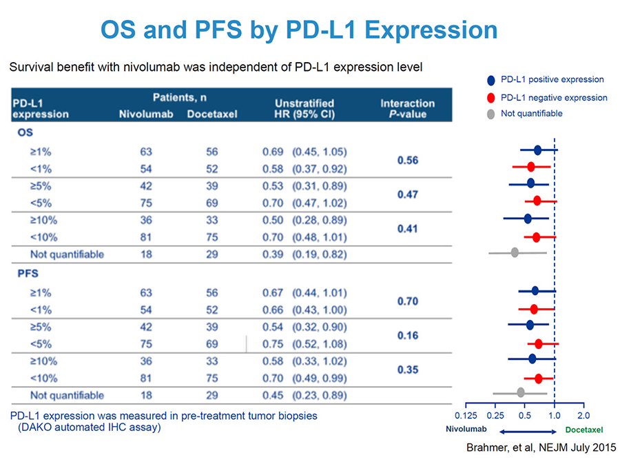
Nivolumab: carcinoma no escamoso
Nivolumab demostró en el estudio CheckMate 057 un aumento significativo de la SG (12.2 vs 9.4 meses) con respecto a docetaxel. No demostró aumento de la SLP, y sí de la tasa de respuestas (19% vs 12%). Sin embargo, a diferencia del ensayo CheckMate 017, el beneficio se correlacionó con el nivel de expresión de PD-L1. A mayor expresión de PD-L1 en el tumor, mayor beneficio.
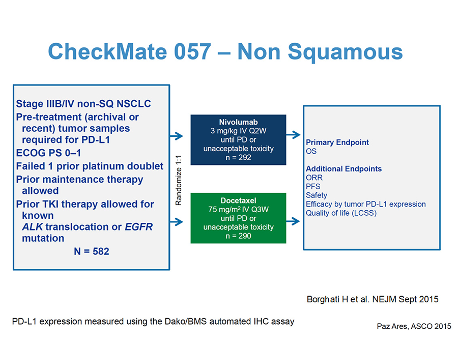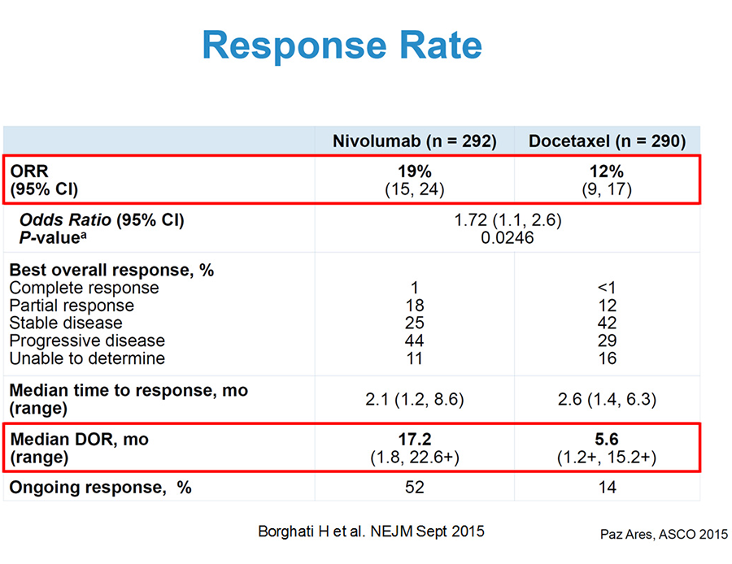
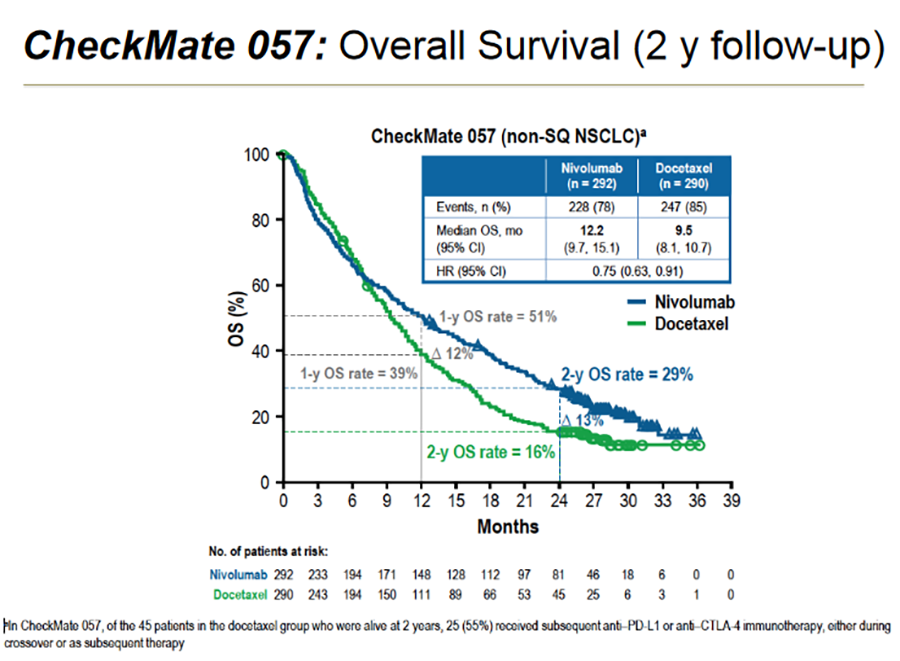
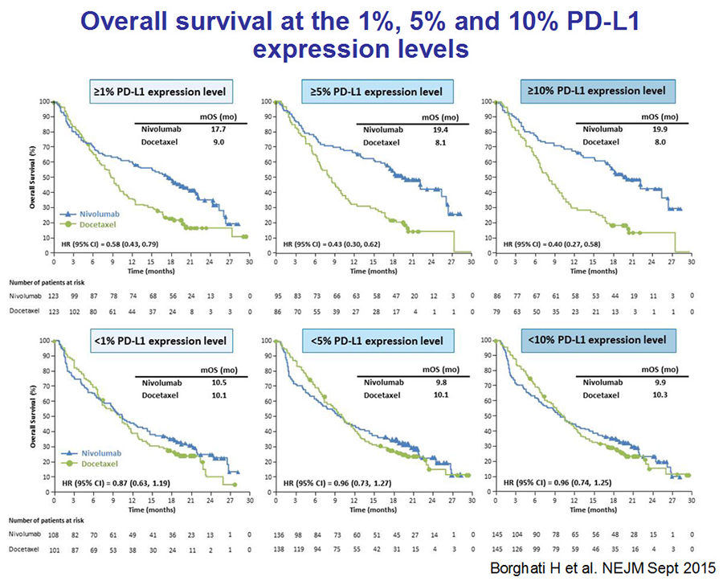
En 2017 conocimos los datos de SG a 3 años de seguimiento donde se mantiene el beneficio de nivolumab sobre docetaxel tanto en histología escamosa como en no escamosa.
En base a estos datos, nivolumab en monoterapia está aprobado para el tratamiento del CNMP, localmente avanzado o metastásico después de quimioterapia previa, independientemente de la expresión de PDL1.
Pembrolizumab
Pembrolizumab es otro anticuerpo monoclonal inhibidor de PD-1.
El ensayo KEYNOTE-010 comparó pembrolizumab (2 mg/Kg ó 10 mg/Kg IV cada 3 semanas) versus docetaxel 75 mg/m2 cada 3 semanas en 1034 pacientes con CNMP de cualquier histología, ECOG 0-1, que habían progresado a una primera línea de quimioterapia basada en platino. En este estudio sólo se incluyeron pacientes con expresión de PD-L1+ ≥ 1% por inmunohistoquímica.
Pembrolizumab demostró superioridad frente a docetaxel en términos de SG, con un HR de 0,71 (IC 95% 0,58-0,88) (2 mg/kg) y medianas de SG de 10,4 meses y 8,5 meses para pembrolizumab y docetaxel respectivamente. También disponemos datos de SG a dos años siendo de 14.5% para docetaxel y de 30.1% para pembrolizumab (2 mg/kg). La TRO de los pacientes tratados con pembrolizumab fue del 18%, el doble que en el brazo control (9,3%). La toxicidad G3-5 fue menor para pembrolizumab que para docetaxel (13%-16% vs 35%).
No hubo diferencias significativas de eficacia ni de toxicidad entre ambas dosis de prembrolizumab.
El beneficio en supervivencia se observó en todos los pacientes, aunque fue superior en aquéllos con mayor sobre-expresión de PD-L1 (1% vs> 50%).
En base a estos datos, pembrolizumab en monoterapia está aprobado para el tratamiento del CNMP, localmente avanzado o metastásico después de quimioterapia previa, en pacientes con expresión de PDL1 ≥ 1%.
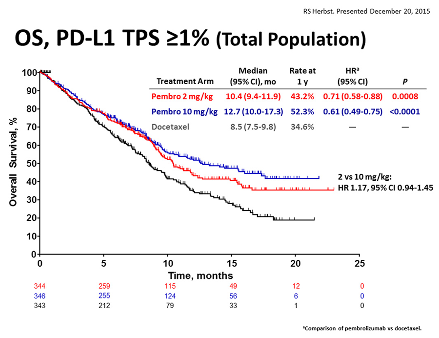
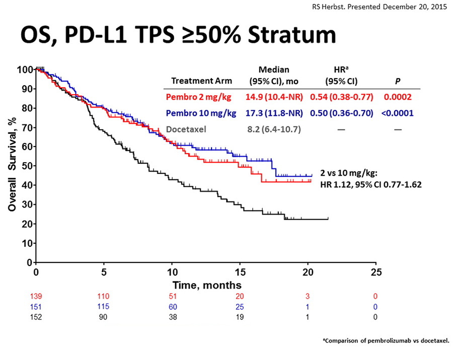
Atezolizumab
Atezolizumab es un anticuerpo monoclonal inhibidor de PDL-1.
En el estudio OAK, 850 pacientes con CNMP avanzado previamente tratados con una o dos líneas de QT previas fueron randomizados a recibir atezolizumab o docetaxel.
Atezolizumab demostró superioridad en términos de SG frente a docetaxel en pacientes con CNMP localmente avanzado o metastásico tras progresión a una primera línea de tratamiento, con una ganancia en la mediana de SG de 4,2 meses, 13.8 vs 9.6 meses (HR 0,73 [IC 95% 0,62-0,87]). El beneficio de atezolizumab sobre la quimioterapia se observa aproximadamente a partir de los 3 meses, momento en que las curvas de supervivencia se separan.
Las tasas de respuesta, en cambio, fueron similares en ambos brazos de tratamiento (14% con atezolizumab y 13% con docetaxel), si bien las respuestas fueron más duraderas con atezolizumab (13,6 meses vs. 6,2 meses). Tampoco se observaron diferencias estadísticamente significativas en la SLP, incluso la mediana de SLP fue superior en el brazo control (4 meses vs. 2 meses), aunque a partir de los 6 meses el beneficio en términos de SLP también parece mayor con atezolizumab.
En el ensayo OAK, la eficacia, en términos de SG, de atezolizumab vs. docetaxel fue similar tanto en el subgrupo de pacientes con histología no escamosa (HR 0,73 [IC 95% 0,60-0,89], como en los pacientes con histología escamosa (HR 0,73 [IC 95% 0,54-0,98].
El beneficio de atezolizumab sobre la quimioterapia se observa en todos los subgrupos analizados de acuerdo al nivel de expresión de PD-L1 (medido no sólo en la célula tumoral sino también en las células inmunes que infiltran el tumor), incluso en el subgrupo de pacientes (45%) con una baja o nula expresión de PD-L1 (< 1%). Cabe señalar, no obstante, que este beneficio aumenta a medida que lo hace la expresión del biomarcador, siendo mayor en aquellos pacientes con una expresión de PD-L1 ≥ 10% en CI o ≥ 50% en CT, donde se alcanzaron medianas de SG de 20,5 meses con atezolizumab vs. 8,9 meses con docetaxel (HR 0,45 [IC 95% 0,27-0,64]), lo que supone un incremento de 11,6 meses en la mediana de SG.
Comparado con docetaxel, atezolizumab presentó un mejor perfil de seguridad y tolerabilidad. En el ensayo OAK se observó un menor número de AA grado 3-4 (54% vs. 37%) y de AA relacionados con el tratamiento grado 3-4 (43% vs. 15%) con atezolizumab.
En base a estos datos, atezolizumab en monoterapia está aprobado para el tratamiento del CNMP, localmente avanzado o metastásico después de quimioterapia previa, independientemente de la expresión de PDL1.
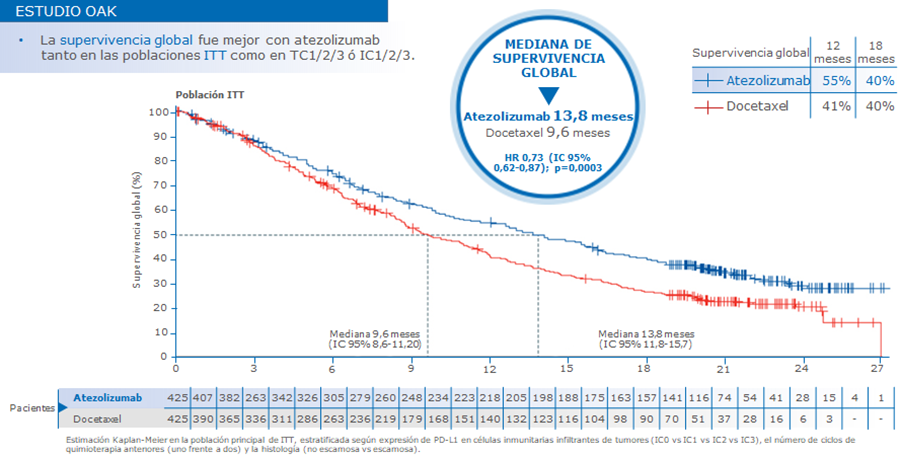
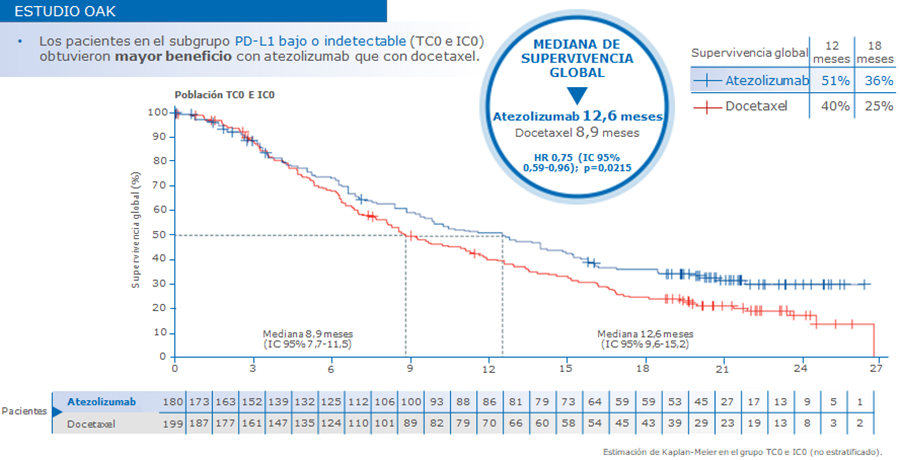
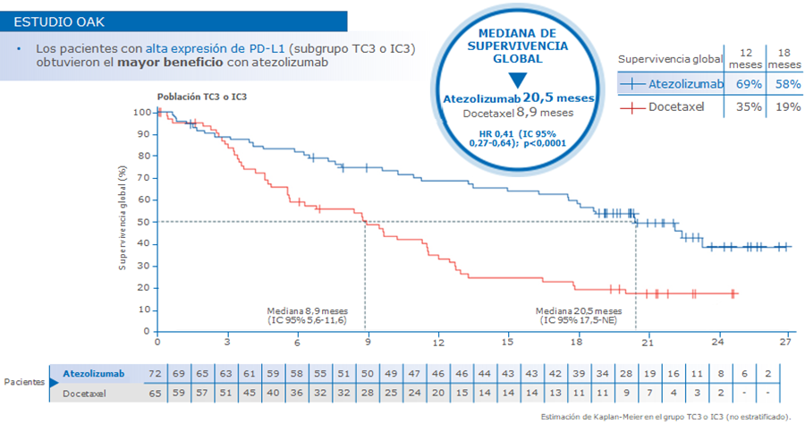
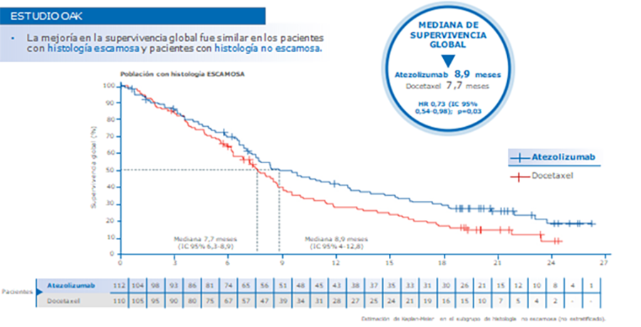
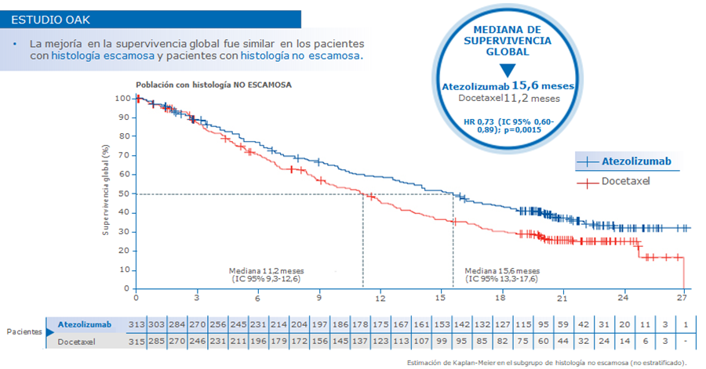